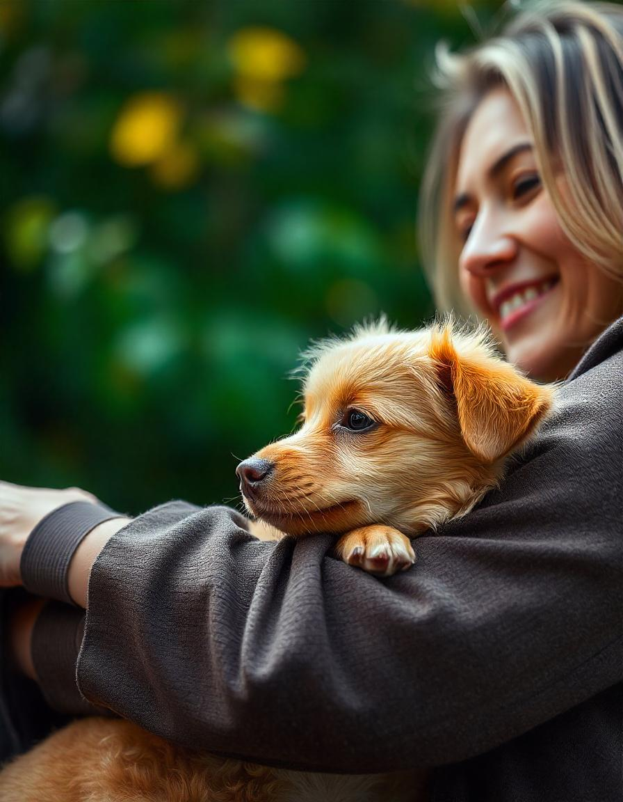
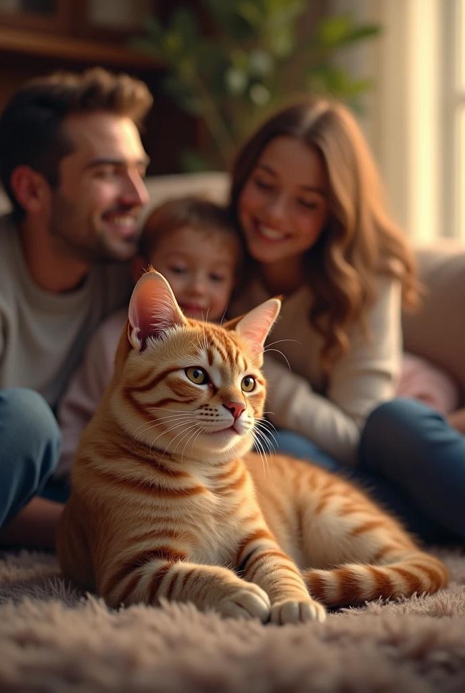
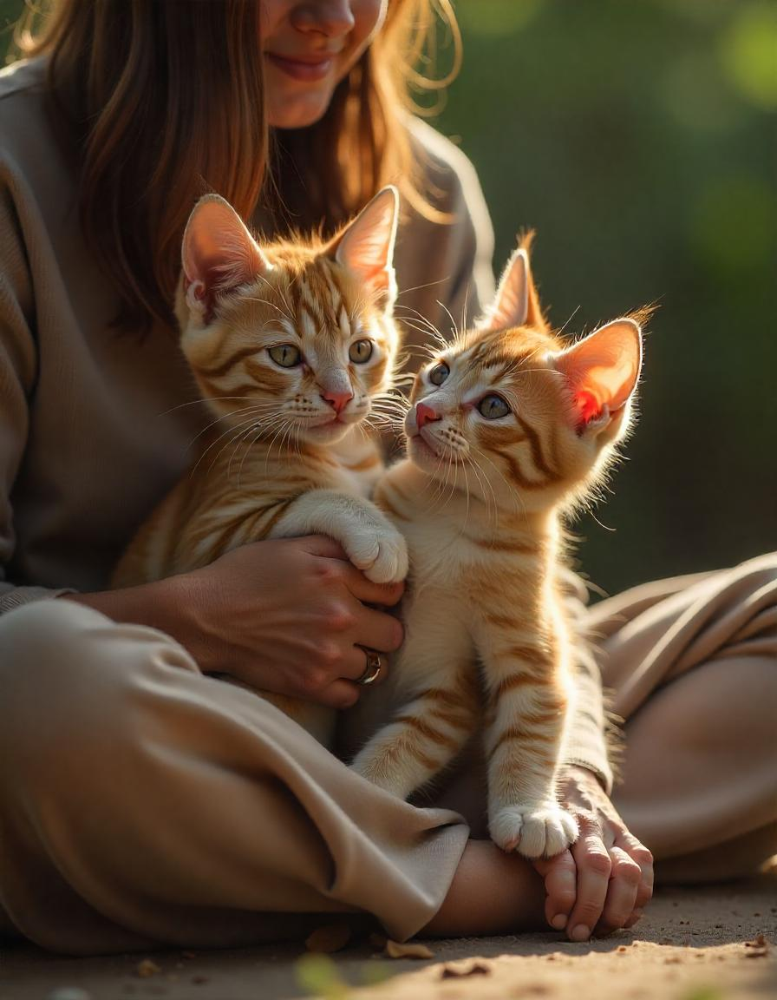
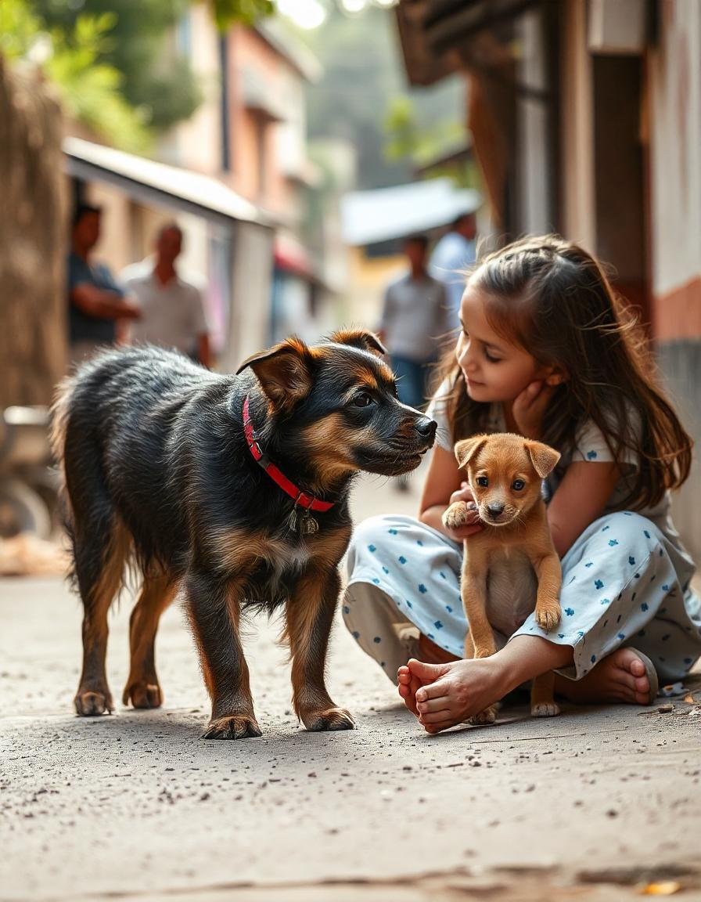

Na Coração Peludo, nossa paixão é resgatar e cuidar de animais abandonados, oferecendo a eles uma nova chance. Desde 2006, temos trabalhado para encontrar lares amorosos e proporcionar a segurança e os cuidados que eles merecem. Acreditamos que a educação é fundamental para um futuro melhor, onde a adoção responsável e o bem-estar animal sejam prioridades.
Venha saber mais sobre nós.

Max, um cãozinho de rua em condições precárias, foi resgatado e tratado por nossa equipe. Agora saudável e feliz, ele encontrou um lar amoroso. Sua história ilustra o impacto positivo da nossa ONG na vida de animais vulneráveis.

Ares era um gatinho de rua que vivia sozinho e com medo. Um dia, encontrou voluntários da nossa ONG alimentando animais e, hesitante, se aproximou. Resgatado, recebeu cuidados e amor no abrigo, tornando-se um gato alegre. Logo, foi adotado por uma família amorosa e agora vive em um lar seguro, mostrando que sempre há esperança para quem precisa.

Nala e Stela eram gatinhas de rua que se tornaram inseparáveis ao se conhecerem em um beco. Enquanto Nala era destemida, Stela era tímida e assustada. Juntas, enfrentaram os desafios diários em busca de comida e abrigo até serem resgatadas pela nossa ONG. No abrigo, receberam cuidados e carinho, e se tornaram mais confiantes. Eventualmente, foram adotadas por uma família amorosa, onde puderam viver juntas em um lar seguro.

Nina e Thor eram dois cães que vagavam pelas ruas. Depois de se encontrarem, foram resgatados pela nossa ONG e receberam cuidados e carinho. Com o tempo, se recuperaram e se tornaram inseparáveis. Por fim, foram adotados juntos por uma família amorosa, demonstrando que a esperança e a amizade podem mudar vidas.